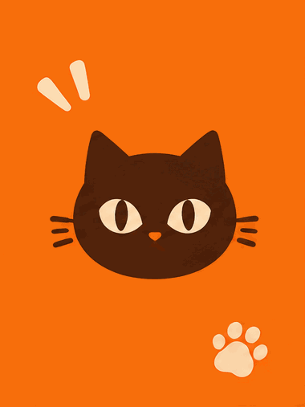

Author: ailingqu / awesome-ai-gif-prompts · original source
Author reports GPT Image 2.6; not authenticated / 作者声明，未独立认证
Published GIF; provider not recorded per case / 此例未记录生成供应商 · GIF hashes/frames checked; frame sheet reviewed; generation not reproduced / 未复现
GIF and published prompt by ailingqu / awesome-ai-gif-prompts, CC BY 4.0: https://creativecommons.org/licenses/by/4.0/ . Original source: https://github.com/ailingqu/awesome-ai-gif-prompts/blob/a20f88b18a9abe8cd1531fb8a8e738a5a4701ce2/gifs/cat-brand-reel.gif . Explicit source grant: https://github.com/ailingqu/awesome-ai-gif-prompts/blob/a20f88b18a9abe8cd1531fb8a8e738a5a4701ce2/README.md#license . License text: https://github.com/ailingqu/awesome-ai-gif-prompts/blob/a20f88b18a9abe8cd1531fb8a8e738a5a4701ce2/LICENSE . GIF bytes and prompt body unchanged; bilingual annotations and metadata added. No endorsement or rights to unrelated third-party trademarks or likenesses are implied.
Media is shown here only with a documented publication grant. Otherwise, view the original source. / 仅展示有明确授权记录的素材，其余请查看原帖。

ailingqu / awesome-ai-gif-prompts · CC BY 4.0 · Source grant. Unmodified GIF bytes; bilingual annotations added.
Published prompt body by ailingqu from https://github.com/ailingqu/awesome-ai-gif-prompts/blob/a20f88b18a9abe8cd1531fb8a8e738a5a4701ce2/data/prompts.json . The source describes its prompts as rewrites inspired by the web; this is not claimed as the upstream author's verbatim prompt. The repository script's loop suffix is documented separately in post.md, not added to this original prompt body. No exact historical submitted request has been independently verified. / 以下仅为 ailingqu 公开提示词正文；脚本后缀单独列出，实际提交请求未独立核实。
A quick-cut brand reel for a fictional cat food brand called "MEOWBITE". The same flat dark-brown cat-head logo — round face, two short pointed ears, cream almond eyes, short whiskers — stays fixed at the center of every frame while everything around it changes: an orange full-bleed poster, a pink pouch of cat food, a blue ceramic cat bowl seen from above, a kraft shipping box, a round sticker, and a final dark frame with the word MEOWBITE in big cream letters. Bold graphic design, flat colors, citrus orange, cream and dark brown palette.